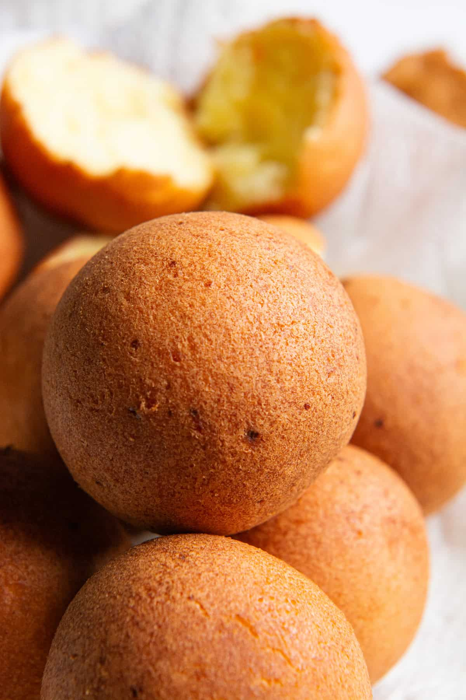

Buñuelos

Home
Cheesy fried dough balls — Christmas classic
Fun fact for you: buñuelos even made a cameo in Encanto — Julieta makes them onscreen
Ingredients
- Grated cheese (queso fresco or a mix of mozzarella/feta as a substitute for queso costeño)
- Cornstarch
- Cassava/yuca flour
- Sugar
- Egg
- Baking powder
- Pinch of salt
- Splash of milk if needed
Steps
- Mix the cheese, cornstarch, cassava flour, sugar, egg, butter, baking soda, and salt in a large bowl until you get a dough with a play-dough-like texture.
- Shape into small balls (golf-ball size).
- Preheat oil to 300–325°F — moderate heat is key so they cook through without burning the outside.
- Fry until deep golden and crispy outside, fluffy inside.
- Traditionally paired with natilla (a cinnamon custard dessert) around Christmastime.